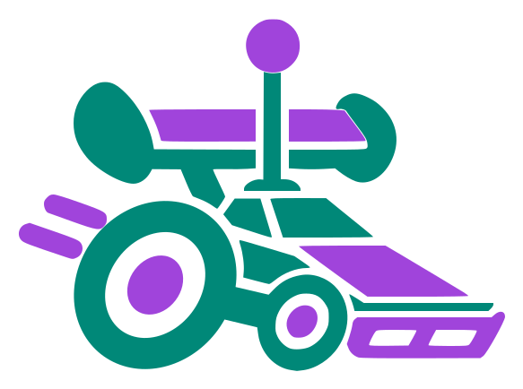

Find what your app can declare
Browse extensions and their packages for Go, Python, TypeScript and Java, to write Runtime Conditions Profiles from your code.
What can you find here?
Extensions
- Common needs: APIs, databases and caches
- AWS services: S3 and SQS
- Messaging: Kafka, NATS and RabbitMQ
- Platform: GPU, file system and Kubernetes API
Packages
- Go modules
- Python packages on PyPI
- TypeScript packages on npm
- Java packages on Maven Central
Until search is ready
Browse every extension in the extensions catalog, or read how extensions work in the guide.